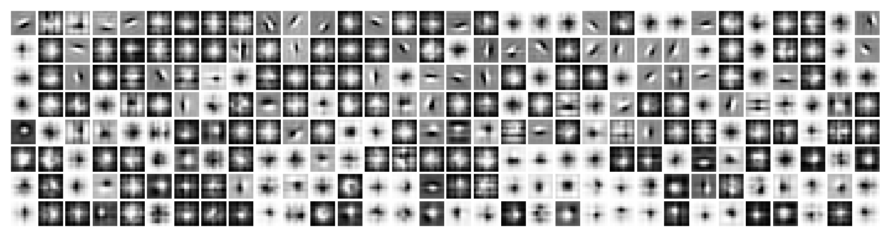
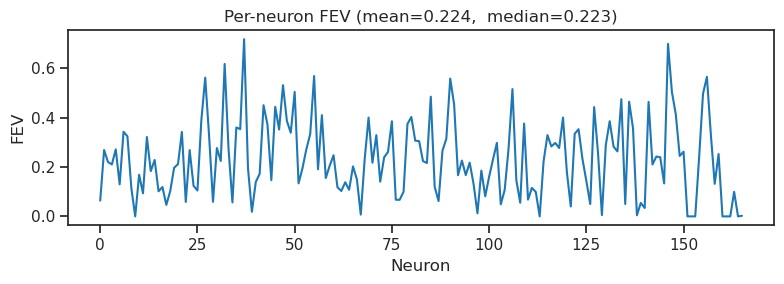
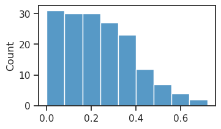
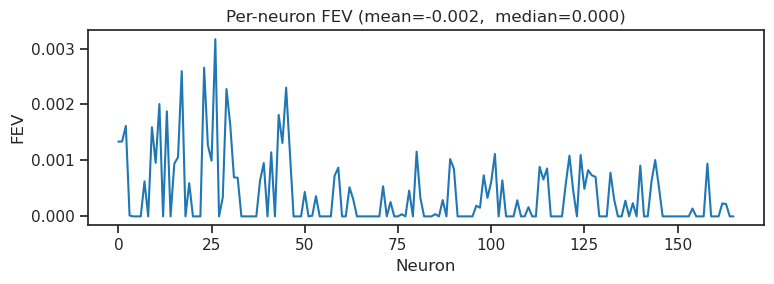
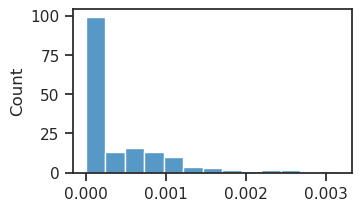
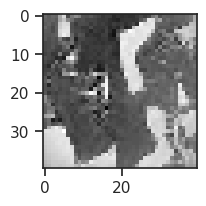
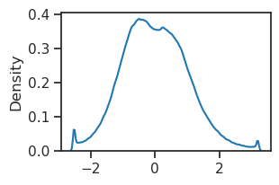

(01) Cadena: fit P-VAE#
device = cuda:1
Motivation:
device_idx = 1
device = f'cuda:{device_idx}'
print(f"device: {device} ——— host: {os.uname().nodename}")
device: cuda:1 ——— host: mach
from mcfe.main.load_model import load_model
from mcfe.common.helpers import print_num_params
Load model#
## Raw
### Linear encoders
wandb_run_id = 'pal-lab/MCFE/g0g3d8r3' # sigmoid, 0.5 --> FEV: 0.249
# wandb_run_id = 'pal-lab/MCFE/ekb7sh92' # sigmoid, 0.05 --> FEV: 0.204
# wandb_run_id = 'pal-lab/MCFE/dadjjx0a' # cubic, 0.5 --> FEV: 0.200
# wandb_run_id = 'pal-lab/MCFE/6toq9cls' # cubic, 0.05 --> FEV: 0.185
## Whitened
### Linear encoders
# wandb_run_id = 'pal-lab/MCFE/zlff603m' # wht, sigmoid, 0.5 --> FEV: 0.262
# wandb_run_id = 'pal-lab/MCFE/ujkyj574' # wht, sigmoid, 0.05 --> FEV: 0.112
# wandb_run_id = 'pal-lab/MCFE/6ubciwud' # wht, cubic, 0.5 --> FEV: 0.224
### Nonlinear encoders
# wandb_run_id = 'pal-lab/MCFE/xrro8wt3' # wht, sigmoid, 0.5 --> FEV: 0.094
# wandb_run_id = 'pal-lab/MCFE/8jndsrvh' # wht, sigmoid, 0.05 --> FEV: 0.105
tr, meta = load_model(target_path=wandb_run_id, verbose=True)
Path 'pal-lab/MCFE/g0g3d8r3' matches WandB format. Fetching config...
wandb: ERROR Failed to detect the name of this notebook. You can set it manually with the WANDB_NOTEBOOK_NAME environment variable to enable code saving.
wandb: [wandb.Api()] Loaded credentials for https://api.wandb.ai from /home/hadi/.netrc.
# params: 53.1 K
Successfully loaded model from /home/hadi/Projects/MCFE/checkpoints/pois-sigmoid_prob_ImageNet40_kms-(256,11,3)/b(300)-ep(30)-lr(0.001)_beta(1)_te mp(1→0.5)/2026_03_29,17:58
Checkpoint File: PoissonVAE+Trainer-0030_(2026_03_29,19:58).pt
tr.model.show();

msg = f"{tr.model.cfg.dataset},\t EAT_{tr.model.cfg.indicator_approx},\t temp_stop = {tr.cfg.temp_stop}"
print(msg)
ImageNet40, EAT_sigmoid, temp_stop = 0.5
print_num_params(tr.model)
+-------------+------------+ | Module Name | Num Params | +-------------+------------+ | PoissonVAE | 53.1 K | | ——— | ——— | | dec | 25.6 K | | enc | 25.6 K | | u_init | 256 | +-------------+------------+
print(tr.model.enc)
Conv2d(1, 256, kernel_size=(10, 10), stride=(3, 3), bias=False)
Cadena fit#
import importlib
spec = importlib.util.spec_from_file_location(
'normative_modules', '/home/hadi/Dropbox/git/_CadenaV1/normative.py')
normative_modules = importlib.util.module_from_spec(spec)
sys.modules['normative_modules'] = normative_modules
spec.loader.exec_module(normative_modules)
train_ds_raw, val_ds_raw = normative_modules.get_train_val_datasets()
kws = dict(model=tr.model, batch_size=300, device=device, feature='firing-rate')
train_ds_feat = normative_modules.extract_features(dataset=train_ds_raw, **kws)
val_ds_feat = normative_modules.extract_features(dataset=val_ds_raw, **kws)
train_dl, val_dl = normative_modules.build_dataloaders(
train_ds_feat.to(device), val_ds_feat.to(device), batch_size=1000)
num_neurons = train_ds_feat[0]['robs'].shape[0]
readout_model = normative_modules.ReadoutOnly(
filter_dims=tr.model.cfg.latent_sz,
num_neurons=num_neurons,
rank=2,
).to(device)
optimizer = torch.optim.AdamW(
readout_model.parameters(),
lr=1e-3,
weight_decay=0.1,
)
%%time
best_state, train_losses, val_losses = normative_modules.fit_readout_sgd(
readout_model, train_dl, val_dl, optimizer,
max_epochs=1_000, patience=20, min_lr=1e-4,
)
readout_model.load_state_dict(best_state)
/home/hadi/Dropbox/git/_CadenaV1/normative.py:271: RuntimeWarning: Degrees of freedom <= 0 for slice.
obs_var = torch.nanmean(torch.tensor(np.nanvar(resp_n.numpy(), axis=0, ddof=1)))
Epoch 0, lr: 0.000021, Validation Loss: 5574.5498046875
New best model
Epoch 10, lr: 0.000221, Validation Loss: 834.7476196289062
New best model
Epoch 20, lr: 0.000421, Validation Loss: 2.175027847290039
New best model
Epoch 30, lr: 0.000620, Validation Loss: 0.11554144322872162
New best model
Epoch 40, lr: 0.000820, Validation Loss: 0.0028642858378589153
New best model
Epoch 50, lr: 0.001000, Validation Loss: 0.0005274262512102723
New best model
Epoch 60, lr: 0.001000, Validation Loss: 2.382233333264594e-06
New best model
Epoch 70, lr: 0.000999, Validation Loss: -0.0004077679477632046
Epoch 80, lr: 0.000998, Validation Loss: -0.0011836508056148887
New best model
Epoch 90, lr: 0.000996, Validation Loss: -0.0018935106927528977
New best model
Epoch 100, lr: 0.000994, Validation Loss: -0.0028041198384016752
New best model
Epoch 110, lr: 0.000991, Validation Loss: -0.004097615834325552
New best model
Epoch 120, lr: 0.000988, Validation Loss: -0.006034242920577526
New best model
Epoch 130, lr: 0.000984, Validation Loss: -0.008317842148244381
New best model
Epoch 140, lr: 0.000980, Validation Loss: -0.012462475337088108
New best model
Epoch 150, lr: 0.000975, Validation Loss: -0.017866702750325203
New best model
Epoch 160, lr: 0.000970, Validation Loss: -0.024737650528550148
New best model
Epoch 170, lr: 0.000964, Validation Loss: -0.03247014433145523
New best model
Epoch 180, lr: 0.000958, Validation Loss: -0.040800247341394424
New best model
Epoch 190, lr: 0.000952, Validation Loss: -0.04964059963822365
New best model
Epoch 200, lr: 0.000945, Validation Loss: -0.05901278555393219
New best model
Epoch 210, lr: 0.000938, Validation Loss: -0.06881861388683319
New best model
Epoch 220, lr: 0.000930, Validation Loss: -0.0783509686589241
New best model
Epoch 230, lr: 0.000922, Validation Loss: -0.08837693929672241
New best model
Epoch 240, lr: 0.000913, Validation Loss: -0.09837375581264496
New best model
Epoch 250, lr: 0.000904, Validation Loss: -0.10844823718070984
New best model
Epoch 260, lr: 0.000895, Validation Loss: -0.11812763661146164
New best model
Epoch 270, lr: 0.000885, Validation Loss: -0.1262383908033371
New best model
Epoch 280, lr: 0.000875, Validation Loss: -0.13680818676948547
New best model
Epoch 290, lr: 0.000864, Validation Loss: -0.14588895440101624
New best model
Epoch 300, lr: 0.000854, Validation Loss: -0.15608860552310944
New best model
Epoch 310, lr: 0.000843, Validation Loss: -0.1636449545621872
New best model
Epoch 320, lr: 0.000831, Validation Loss: -0.1702343225479126
Epoch 330, lr: 0.000819, Validation Loss: -0.1791732907295227
New best model
Epoch 340, lr: 0.000807, Validation Loss: -0.1839369833469391
Epoch 350, lr: 0.000795, Validation Loss: -0.19062203168869019
New best model
Epoch 360, lr: 0.000782, Validation Loss: -0.1965571939945221
New best model
Epoch 370, lr: 0.000769, Validation Loss: -0.20048294961452484
Epoch 380, lr: 0.000756, Validation Loss: -0.20407433807849884
Epoch 390, lr: 0.000743, Validation Loss: -0.20856356620788574
Epoch 400, lr: 0.000729, Validation Loss: -0.212879478931427
New best model
Epoch 410, lr: 0.000716, Validation Loss: -0.21590156853199005
Epoch 420, lr: 0.000702, Validation Loss: -0.21661409735679626
Epoch 430, lr: 0.000688, Validation Loss: -0.2200329601764679
New best model
Epoch 440, lr: 0.000673, Validation Loss: -0.21991996467113495
Epoch 450, lr: 0.000659, Validation Loss: -0.22201906144618988
Epoch 460, lr: 0.000645, Validation Loss: -0.2205825299024582
Epoch 470, lr: 0.000630, Validation Loss: -0.22185619175434113
Stopping early due to no improvement
CPU times: user 28min 19s, sys: 1.27 s, total: 28min 20s
Wall time: 3min 7s
<All keys matched successfully>
eval_results = normative_modules.run_eval(readout_model, val_dl)
fev, var_explained, explainable_var, mse, total_variance = eval_results
fev_mean = torch.nanmean(fev).item()
fev_all = torch.nan_to_num(fev.detach().cpu(), nan=0.0).clip(min=0)
print('Held-out FEV mean:', fev_mean)
plt.figure(figsize=(8, 3))
plt.plot(fev_all)
plt.title(f'Per-neuron FEV (mean={fev_mean:.3f}, median={np.nanmedian(fev_all):0.3f})')
plt.xlabel('Neuron')
plt.ylabel('FEV')
plt.tight_layout()
plt.show()
Held-out FEV mean: 0.22356989979743958

fig, ax = create_figure(1, 1, (3.5, 2))
sns.histplot(fev_all, ax=ax)
plt.show()

make random model#
from mcfe.main.model import MODEL_CLASSES
from mcfe.main.config_model import CFG_CLASSES
from mcfe.train.train import Trainer, ConfigTrain
from mcfe.default_cfgs import default_configs
model_type = 'pois'
cfg_vae, cfg_tr = default_configs(dataset='vH16-wht', model_type=model_type)
cfg_vae['latent_channels'] = 256
cfg_vae['latent_pixels'] = 10
cfg_vae['latent_stride'] = 3
cfg_vae['lin_enc'] = False
cfg = CFG_CLASSES[model_type](**cfg_vae)
cfg.input_sz = [1, 40, 40] # mock construct
model = MODEL_CLASSES[model_type](cfg)
tr = Trainer(model, ConfigTrain(**cfg_tr), device=device)
print(tr.model.cfg.latent_sz)
(256, 10, 10)
print(tr.model.dec)
ConvDictionary(in_channels=256, out_channels=1, kernel_size=13, stride=3)
print(tr.model.enc)
Sequential( (0): Conv2d(1, 32, kernel_size=(3, 3), stride=(1, 1), padding=(1, 1)) (1): SiLU(inplace=True) (2): ResBlock( (conv1): Conv2d(32, 64, kernel_size=(3, 3), stride=(2, 2), padding=(1, 1)) (act): SiLU(inplace=True) (conv2): Conv2d(64, 64, kernel_size=(3, 3), stride=(1, 1), padding=(1, 1)) (se): SELayer( (fc): Sequential( (0): Linear(in_features=64, out_features=4, bias=True) (1): ReLU(inplace=True) (2): Linear(in_features=4, out_features=64, bias=True) (3): Sigmoid() ) ) (skip): FactorizedReduce( (act): SiLU() (convs): ModuleList( (0-3): 4 x Conv2d(32, 16, kernel_size=(1, 1), stride=(2, 2)) ) ) ) (3): ResBlock( (conv1): Conv2d(64, 128, kernel_size=(3, 3), stride=(2, 2), padding=(1, 1)) (act): SiLU(inplace=True) (conv2): Conv2d(128, 128, kernel_size=(3, 3), stride=(1, 1), padding=(1, 1)) (se): SELayer( (fc): Sequential( (0): Linear(in_features=128, out_features=8, bias=True) (1): ReLU(inplace=True) (2): Linear(in_features=8, out_features=128, bias=True) (3): Sigmoid() ) ) (skip): FactorizedReduce( (act): SiLU() (convs): ModuleList( (0-3): 4 x Conv2d(64, 32, kernel_size=(1, 1), stride=(2, 2)) ) ) ) (4): Conv2d(128, 256, kernel_size=(1, 1), stride=(1, 1)) )
x = torch.randn((123, 1, 40, 40)).to(device)
out = tr.model(x)
lamb = out['posterior'].rate
lamb.shape
torch.Size([123, 256, 10, 10])
normative files#
import importlib
spec = importlib.util.spec_from_file_location(
'normative_modules', '/home/hadi/Dropbox/git/_CadenaV1/normative.py')
normative_modules = importlib.util.module_from_spec(spec)
sys.modules['normative_modules'] = normative_modules
spec.loader.exec_module(normative_modules)
train_ds_raw, val_ds_raw = normative_modules.get_train_val_datasets()
kws = dict(model=tr.model, batch_size=1024, device=device, log_rate=False)
train_ds_feat = normative_modules.extract_features(dataset=train_ds_raw, **kws)
val_ds_feat = normative_modules.extract_features(dataset=val_ds_raw, **kws)
train_dl, val_dl = normative_modules.build_dataloaders(
train_ds_feat.to(device), val_ds_feat.to(device), batch_size=256)
num_neurons = train_ds_feat[0]['robs'].shape[0]
readout_model = normative_modules.ReadoutOnly(
filter_dims=tr.model.cfg.latent_sz,
num_neurons=num_neurons,
rank=2,
).to(device)
optimizer = torch.optim.AdamW(readout_model.parameters(), lr=1e-3, weight_decay=0.1)
best_state, train_losses, val_losses = normative_modules.fit_readout_sgd(
readout_model, train_dl, val_dl, optimizer,
max_epochs=100, patience=20, min_lr=1e-3,
)
readout_model.load_state_dict(best_state)
/home/hadi/Dropbox/git/_CadenaV1/normative.py:246: RuntimeWarning: Degrees of freedom <= 0 for slice.
obs_var = torch.nanmean(torch.tensor(np.nanvar(resp_n.numpy(), axis=0, ddof=1)))
Epoch 0, lr: 0.000201, Validation Loss: 5.39398193359375
New best model
Epoch 1, lr: 0.000401, Validation Loss: 2.6543543338775635
New best model
Epoch 2, lr: 0.000600, Validation Loss: 1.2101563215255737
New best model
Epoch 3, lr: 0.000800, Validation Loss: 0.7684622406959534
New best model
Epoch 4, lr: 0.001000, Validation Loss: 0.5959029793739319
New best model
Epoch 5, lr: 0.001000, Validation Loss: 0.34548306465148926
New best model
Epoch 6, lr: 0.001000, Validation Loss: 0.07607466727495193
New best model
Epoch 7, lr: 0.001000, Validation Loss: 0.0072450279258191586
New best model
Epoch 8, lr: 0.001000, Validation Loss: 0.0022762594744563103
New best model
Epoch 9, lr: 0.001000, Validation Loss: 0.002292536897584796
Epoch 10, lr: 0.001000, Validation Loss: 0.0017424533143639565
New best model
Epoch 11, lr: 0.001000, Validation Loss: 0.0018730208976194263
Epoch 12, lr: 0.001000, Validation Loss: 0.0015123136108741164
New best model
Epoch 13, lr: 0.001000, Validation Loss: 0.0024371566250920296
Epoch 14, lr: 0.001000, Validation Loss: 0.0017707165097817779
Epoch 15, lr: 0.001000, Validation Loss: 0.001972545636817813
Epoch 16, lr: 0.001000, Validation Loss: 0.0016983950044959784
Epoch 17, lr: 0.001000, Validation Loss: 0.0027440448757261038
Epoch 18, lr: 0.001000, Validation Loss: 0.0023373612202703953
Epoch 19, lr: 0.001000, Validation Loss: 0.0028195008635520935
Epoch 20, lr: 0.001000, Validation Loss: 0.0021742607932537794
Epoch 21, lr: 0.001000, Validation Loss: 0.0020560731645673513
Epoch 22, lr: 0.001000, Validation Loss: 0.001612638821825385
Epoch 23, lr: 0.001000, Validation Loss: 0.0017715934664011002
Epoch 24, lr: 0.001000, Validation Loss: 0.0024099417496472597
Epoch 25, lr: 0.001000, Validation Loss: 0.002545695984736085
Epoch 26, lr: 0.001000, Validation Loss: 0.00219120760448277
Epoch 27, lr: 0.001000, Validation Loss: 0.00297635979950428
Epoch 28, lr: 0.001000, Validation Loss: 0.0018734104232862592
Epoch 29, lr: 0.001000, Validation Loss: 0.002542900387197733
Epoch 30, lr: 0.001000, Validation Loss: 0.0037319394759833813
Epoch 31, lr: 0.001000, Validation Loss: 0.002232844475656748
Epoch 32, lr: 0.001000, Validation Loss: 0.0019892111886292696
Stopping early due to no improvement
<All keys matched successfully>
eval_results = normative_modules.run_eval(readout_model, val_dl)
fev, var_explained, explainable_var, mse, total_variance = eval_results
fev_mean = torch.nanmean(fev).item()
fev_all = torch.nan_to_num(fev.detach().cpu(), nan=0.0).clip(min=0)
print('Held-out FEV mean:', fev_mean)
plt.figure(figsize=(8, 3))
plt.plot(fev_all)
plt.title(f'Per-neuron FEV (mean={fev_mean:.3f}, median={np.nanmedian(fev_all):0.3f})')
plt.xlabel('Neuron')
plt.ylabel('FEV')
plt.tight_layout()
plt.show()
Held-out FEV mean: -0.0015123136108741164

fig, ax = create_figure(1, 1, (3.5, 2))
sns.histplot(fev_all, ax=ax)
plt.show()

train_ds_raw[0]['stim'].shape
torch.Size([1, 40, 40])
imshow(train_ds_raw[10]['stim'][0], cmap='Grays_r')
plt.show()

x = tonp(train_ds_raw[:]['stim'])
x.shape
(18560, 1, 40, 40)
sns.kdeplot(x.ravel())
plt.show()
